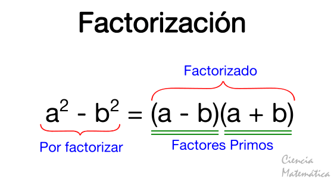

MATEMATICAS
¿QUE SON PRUDUCTOS NOTABLES?
Los productos notables son fórmulas algebraicas que permiten simplificar la multiplicación de polinomios de manera rápida y eficiente. Existen varias fórmulas fundamentales que se consideran productos notables: Cuadrado de un binomio: (a + b) ² = a² + 2ab + b² (a - b) ² = a² - 2ab + b² Producto de binomios conjugados: (a + b) (a - b) = a² - b² Producto de binomios: (a + b) (c + d) = ac + ad + bc + bd Cubo de un binomio: (a + b) ³ = a³ + 3a²b + 3ab² + b³ (a - b) ³ = a³ - 3a²b + 3ab² - b³ Estos productos notables son herramientas útiles en álgebra para simplificar expresiones y resolver ecuaciones más fácilmente.

¿PRODUCTO DE LA SUMA POR LA DIFERENCIA DE 2 BINOMIOS?
Cuando multiplicas una suma por una diferencia, como en (a+b) (a−b) (a + b) (a - b) (a+b) (a−b), puedes pensar en esto como: 1. Multiplica el primer término de la primera expresión (a) por el primer término de la segunda expresión (a): Eso te da a2a^2a2. 2. Multiplica el primer término de la primera expresión (a) por el segundo término de la segunda expresión (-b): Eso te da −ab-ab−ab. 3. Multiplica el segundo término de la primera expresión (b) por el primer término de la segunda expresión (a): Eso te da ababab. 4. Multiplica el segundo término de la primera expresión (b) por el segundo término de la segunda expresión (-b): Eso te da −b2-b^2−b2. Ahora, suma todos esos resultados: a2−ab+ab−b2a^2 - ab + ab - b^2a2−ab+ab−b2. Verás que los términos −ab-ab−ab y ababab se cancelan entre sí, así que solo te queda a2−b2a^2 - b^2a2−b2. Cuando multiplicas una suma por una diferencia del mismo par de términos, el resultado es el cuadrado del primer término menos el cuadrado del segundo término.

¿PRODUCTO DE 2 BINOMIOSS DE LA FORMA (a + b) = (a + c)
1. Multiplica cada parte del primer binomio por cada parte del segundo binomio. Imagina que tienes (a+b) (a + b) (a+b) y (a+c) (a + c) (a+c). Vamos a multiplicar paso a paso: o Multiplica aaa del primer binomio por aaa del segundo binomio: eso te da a2a^2a2. o Multiplica aaa del primer binomio por ccc del segundo binomio: eso te da acacac. o Multiplica bbb del primer binomio por aaa del segundo binomio: eso te da bababa (o ababab, que es lo mismo). o Multiplica bbb del primer binomio por ccc del segundo binomio: eso te da bcbcbc. 2. Suma todos esos resultados. Ahora, junta todo: a2+ac+ab+bca^2 + ac + ab + bca2+ac+ab+bc. Al multiplicar dos binomios de la forma (a+b) (a + b) (a+b) y (a+c) (a + c) (a+c), simplemente multiplica cada término del primer binomio por cada término del segundo binomio y luego suma todos los resultados.
CUADRDO DE UN BINOMIO
Cuadrado de una Suma: (a+b)2(a + b) ^2(a+b)2 Para encontrar el cuadrado de (a+b) (a + b) (a+b), sigue estos pasos: 1. Cuadrado del primer término: Multiplica aaa por sí mismo: a2a^2a2. 2. Multiplica los dos términos y duplica el resultado: Multiplica aaa por bbb, y luego multiplica por 2: 2ab2ab2ab. 3. Cuadrado del segundo término: Multiplica bbb por sí mismo: b2b^2b2. Entonces, el cuadrado de (a+b) (a + b) (a+b) es: (a+b)2=a2+2ab+b2(a + b) ^2 = a^2 + 2ab + b^2(a+b)2=a2+2ab+b2 Cuadrado de una Resta: (a−b)2(a - b) ^2(a−b)2 Para el cuadrado de (a−b) (a - b) (a−b), haz lo siguiente: 1. Cuadrado del primer término: Multiplica aaa por sí mismo: a2a^2a2. 2. Multiplica los dos términos y duplica el resultado (pero con signo negativo): Multiplica aaa por bbb, y luego multiplica por 2, pero pon un signo negativo: −2ab-2ab−2ab. 3. Cuadrado del segundo término: Multiplica bbb por sí mismo: b2b^2b2. Entonces, el cuadrado de (a−b) (a - b) (a−b) es: (a−b)2=a2−2ab+b2(a - b) ^2 = a^2 - 2ab + b^2(a−b)2=a2−2ab+b2
Ejemplos • Para (3+4)2(3 + 4) ^2(3+4)2: o (3+4)2=32+2⋅3⋅4+42=9+24+16=49(3 + 4) ^2 = 3^2 + 2 \cdot 3 \cdot 4 + 4^2 = 9 + 24 + 16 = 49(3+4)2=32+2⋅3⋅4+42=9+24+16=49 • Para (5−2)2(5 - 2) ^2(5−2)2: o (5−2)2=52−2⋅5⋅2+22=25−20+4=9(5 - 2) ^2 = 5^2 - 2 \cdot 5 \cdot 2 + 2^2 = 25 - 20 + 4 = 9(5−2)2=52−2⋅5⋅2+22=25−20+4=9 Así que, para calcular el cuadrado de un binomio, solo necesitas seguir estos pasos y aplicar las fórmulas correspondientes.

¿CUBO DE LA SUMA DE 2 TERMINOS Y CUBO DE LA DIFERENCIA DE 2 TERMINOS?
Cubo de la Suma: (a+b)3(a + b) ^3(a+b)3 Para encontrar el cubo de (a+b) (a + b) (a+b), sigue estos pasos: 1. Cubo del primer término: a3a^3a3. 2. Multiplica el primer término por el segundo y luego duplica el resultado: 3⋅a2⋅b3 \cdot a^2 \cdot b3⋅a2⋅b. 3. Cubo del segundo término: b3b^3b3. Entonces, el cubo de (a+b) (a + b) (a+b) es: (a+b)3=a3+3a2b+3ab2+b3(a + b) ^3 = a^3 + 3a^2b + 3ab^2 + b^3(a+b)3=a3+3a2b+3ab2+b3 Cubo de la Resta: (a−b)3(a - b) ^3(a−b)3 Para el cubo de (a−b) (a - b) (a−b), haz lo siguiente: 1. Cubo del primer término: a3a^3a3. 2. Multiplica el primer término por el segundo (con signo negativo) y luego duplica el resultado: −3⋅a2⋅b-3 \cdot a^2 \cdot b−3⋅a2⋅b. 3. Cubo del segundo término: −b3-b^3−b3. Entonces, el cubo de (a−b) (a - b) (a−b) es: (a−b)3=a3−3a2b+3ab2−b3(a - b) ^3 = a^3 - 3a^2b + 3ab^2 - b^3(a−b)3=a3−3a2b+3ab2−b3 Ejemplos • Para (2+3)3(2 + 3) ^3(2+3)3: o (2+3)3=23+3⋅22⋅3+3⋅2⋅32+33(2 + 3) ^3 = 2^3 + 3 \cdot 2^2 \cdot 3 + 3 \cdot 2 \cdot 3^2 + 3^3(2+3)3=23+3⋅22⋅3+3⋅2⋅32+33 o =8+36+54+27=125= 8 + 36 + 54 + 27 = 125=8+36+54+27=125 • Para (4−1)3(4 - 1) ^3(4−1)3: o (4−1)3=43−3⋅42⋅1+3⋅4⋅12−13(4 - 1) ^3 = 4^3 - 3 \cdot 4^2 \cdot 1 + 3 \cdot 4 \cdot 1^2 - 1^3(4−1)3=43−3⋅42⋅1+3⋅4⋅12−13 o =64−48+12−1=27= 64 - 48 + 12 - 1 = 27=64−48+12−1=27 Así que, para el cubo de una suma o una resta, solo necesitas aplicar estas fórmulas.
¿QUE ES FACTORIZACION?
Factorización es como dividir algo en partes más pequeñas. Es cuando tomas una expresión o un número y lo descompones en un producto de otras partes que, al multiplicarse, te dan el resultado original. Ejemplos Sencillos 1. Números: o Si tienes el número 12, puedes dividirlo en partes más pequeñas: 12=2×612 = 2 \times 612=2×6 o 12=2×2×312 = 2 \times 2 \times 312=2×2×3. 2. Expresiones Algebraicas: o Para algo como x2+5x+6x^2 + 5x + 6x2+5x+6, puedes escribirlo como (x+2) (x+3) (x + 2) (x + 3) (x+2) (x+3). Aquí, estás dividiendo la expresión en dos partes que, al multiplicarse, te dan la expresión original. 3. Factores Comunes: o Si tienes 4x+84x + 84x+8, puedes notar que ambos términos tienen un 4 en común. Así que puedes "sacar" ese 4 y escribirlo como 4(x+2)4(x + 2)4(x+2). ¿Por qué es útil? • Hacer las cosas más simples: Hace que trabajar con números y expresiones sea más fácil. • Ayuda a encontrar soluciones a ecuaciones y problemas matemáticos. la factorización es solo una forma de dividir algo en partes más simples para que sea más fácil de manejar y entender.

¿FOCTORIZACION POR FACTOR COMUN?
Factorización por Factor Común Imagina que tienes varios términos en una expresión, y todos ellos tienen algo en común. La factorización por factor común es simplemente encontrar ese "algo en común" y "sacarlo afuera". Ejemplo Paso a Paso Supongamos que tienes esta expresión: 6x+126x + 126x+12 1. Encuentra el factor común: o Mira cada término y busca el número o variable que está en todos ellos. Aquí, tanto 6x6x6x como 121212 tienen un 666 en común. 2. Saca el factor común afuera: o Es como si sacaras el 666 de cada término y lo pusieras fuera de un paréntesis. Lo que queda dentro del paréntesis es lo que queda después de dividir cada término por 666. 3. Escribe la expresión factorizada: o Así que, sacando 666 afuera, tenemos: 6x+12=6(x+2)6x + 12 = 6(x + 2)6x+12=6(x+2) Aquí, 666 es el factor común, y lo que queda dentro del paréntesis es x+2x + 2x+2, que es lo que obtienes al dividir 6x6x6x y 121212 por 666. Resumen Cuando factorizas por factor común: • Busca un número o una variable que esté en todos los términos. • Saca ese factor común y ponlo afuera de un paréntesis. • Lo que queda dentro del paréntesis es lo que obtienes después de dividir cada término por el factor común.

¿FACTOR COMUN POR AGRUPACION DE TERMINOS?
La factorización por agrupación de términos es una técnica que se usa cuando no puedes encontrar un único factor común en toda la expresión, pero sí puedes agrupar los términos en partes que sí tienen factores comunes. Aquí te explico cómo hacerlo de manera sencilla: Pasos para Factorizar por Agrupación de Términos 1. Agrupa los términos en pares: Divide la expresión en dos o más grupos de términos que tengan algo en común. 2. Encuentra el factor común en cada grupo: Dentro de cada grupo, busca un factor común. 3. Factoriza cada grupo: Saca el factor común de cada grupo y ponlo fuera del paréntesis. 4. Busca un factor común en los nuevos términos: Si hiciste bien la agrupación, deberías poder encontrar un nuevo factor común en los términos que quedan. 5. Saca el factor común final: Escribe el factor común final fuera de un paréntesis, y dentro del paréntesis pon el resultado de la factorización de los términos. Ejemplo Simple Supongamos que tienes la expresión: x3+2x2+3x+6x^3 + 2x^2 + 3x + 6x3+2x2+3x+6 1. Agrupa los términos en pares: Agrupa los términos de dos en dos: (x3+2x2)+(3x+6)(x^3 + 2x^2) + (3x + 6)(x3+2x2)+(3x+6) 2. Encuentra el factor común en cada grupo: o En el primer grupo x3+2x2x^3 + 2x^2x3+2x2, el factor común es x2x^2x2: x2(x+2)x^2(x + 2)x2(x+2) o En el segundo grupo 3x+63x + 63x+6, el factor común es 333: 3(x+2)3(x + 2)3(x+2) 3. Factoriza cada grupo: Así que, la expresión se convierte en: x2(x+2) +3(x+2)x^2(x + 2) + 3(x + 2)x2(x+2)+3(x+2) 4. Busca un factor común en los nuevos términos: Ahora, (x+2) (x + 2)(x+2) es común en ambos términos. 5. Saca el factor común final: Así que puedes escribir la expresión como: (x+2) (x2+3)(x + 2)(x^2 + 3)(x+2)(x2+3) Otro Ejemplo Para la expresión: ab+ac+bd+cdab + ac + bd + cdab+ac+bd+cd 1. Agrupa los términos en pares: (ab+ac) +(bd+cd) (ab + ac) + (bd + cd) (ab+ac) +(bd+cd) 2. Encuentra el factor común en cada grupo: o En el primer grupo ab+acab + acab+ac, el factor común es aaa: a(b+c) a (b + c) a(b+c) o En el segundo grupo bd+cdbd + cdbd+cd, el factor común es ddd: d(b+c) d (b + c) d(b+c) 3. Factoriza cada grupo: Así que la expresión se convierte en: a(b+c) +d(b+c) a (b + c) + d (b + c) a(b+c) +d(b+c) 4. Busca un factor común en los nuevos términos: Ahora, (b+c) (b + c) (b+c) es común en ambos términos. 5. Saca el factor común final: Así que puedes escribir la expresión como: (b+c)(a+d)(b + c)(a + d)(b+c)(a+d) la factorización por agrupación de términos te ayuda a simplificar una expresión agrupando términos que tienen factores comunes, y luego sacando esos factores comunes para simplificar la expresión general.

¿DIFERENCIA DE CUADRADOS?
La diferencia de cuadrados es una fórmula algebraica que se usa para factorizar una expresión de la forma a2−b2a^2 - b^2a2−b2. La idea es que puedes descomponer esta expresión en un producto de dos binomios. Aquí te lo explico de forma sencilla: Fórmula La fórmula para la diferencia de cuadrados es: a2−b2=(a+b) (a−b) a^2 - b^2 = (a + b) (a - b) a2−b2=(a+b) (a−b) ¿Cómo funciona? 1. Identifica los términos: En a2−b2a^2 - b^2a2−b2, a2a^2a2 y b2b^2b2 son cuadrados perfectos. Por ejemplo, si tienes 9−169 - 169−16, puedes ver que 999 es 323^232 y 161616 es 424^242. 2. Aplica la fórmula: Usa la fórmula para escribir a2−b2a^2 - b^2a2−b2 como el producto de dos binomios: o a+ba + ba+b es una parte. o a−ba - ba−b es la otra parte. Entonces, 9−169 - 169−16 se factoriza como (3+4) (3−4) (3 + 4) (3 - 4) (3+4) (3−4). Ejemplos 1. Ejemplo 1: Para la expresión x2−9x^2 - 9x2−9: o Identifica a=xa = xa=x y b=3b = 3b=3, ya que 9=329 = 3^29=32. o Usa la fórmula: x2−9=(x+3) (x−3) x^2 - 9 = (x + 3) (x - 3) x2−9=(x+3) (x−3). o 2. Ejemplo 2: Para la expresión 25−y225 - y^225−y2: o Identifica a=5a = 5a=5 y b=yb = yb=y, ya que 25=5225 = 5^225=52 y y2=y2y^2 = y^2y2=y2. o Usa la fórmula: 25−y2=(5+y) (5−y)25 - y^2 = (5 + y) (5 - y)25−y2=(5+y) (5−y). Resumen La diferencia de cuadrados te permite factorizar una expresión de la forma a2−b2a^2 - b^2a2−b2 en un producto de dos binomios: (a+b) (a−b) (a + b) (a - b) (a+b) (a−b). Es una herramienta útil para simplificar y resolver problemas matemáticos.

¿TRINOMIO CUADRADO PERFECTO?
Un trinomio cuadrado perfecto es una expresión algebraica que resulta de elevar al cuadrado un binomio. En otras palabras, es un trinomio que puede ser escrito como el cuadrado de un binomio. Fórmulas Hay dos formas principales de trinomios cuadrados perfectos, dependiendo de si el binomio original es una suma o una resta: 1. Cuadrado de una suma: (a+b)2=a2+2ab+b2(a + b)^2 = a^2 + 2ab + b^2(a+b)2=a2+2ab+b2 2. Cuadrado de una resta: (a−b)2=a2−2ab+b2(a - b)^2 = a^2 - 2ab + b^2(a−b)2=a2−2ab+b2 Cómo Identificar un Trinomio Cuadrado Perfecto 1. Cuadrado de una suma: o Forma: a2+2ab+b2a^2 + 2ab + b^2a2+2ab+b2 o Ejemplo: x2+6x+9x^2 + 6x + 9x2+6x+9 Aquí, x2x^2x2 es a2a^2a2, 999 es b2b^2b2, y el término del medio, 6x6x6x, es 2ab2ab2ab. o Entonces, x2+6x+9x^2 + 6x + 9x2+6x+9 se puede escribir como (x+3)2(x + 3) ^2(x+3)2. 2. Cuadrado de una resta: o Forma: a2−2ab+b2a^2 - 2ab + b^2a2−2ab+b2 o Ejemplo: x2−4x+4x^2 - 4x + 4x2−4x+4 Aquí, x2x^2x2 es a2a^2a2, 444 es b2b^2b2, y el término del medio, −4x-4x−4x, es −2ab-2ab−2ab. Entonces, x2−4x+4x^2 - 4x + 4x2−4x+4 se puede escribir como (x−2)2(x - 2) ^2(x−2)2. Cómo Factorizar un Trinomio Cuadrado Perfecto Para factorizar un trinomio cuadrado perfecto: 1. Identifica los términos: o Busca un trinomio en la forma a2+2ab+b2a^2 + 2ab + b^2a2+2ab+b2 o a2−2ab+b2a^2 - 2ab + b^2a2−2ab+b2. 2. Encuentra el binomio original: o Para a2+2ab+b2a^2 + 2ab + b^2a2+2ab+b2, el binomio es (a+b) (a + b) (a+b). o Para a2−2ab+b2a^2 - 2ab + b^2a2−2ab+b2, el binomio es (a−b) (a - b) (a−b). 3. Escribe el binomio al cuadrado: o Usa la fórmula para escribir el trinomio como el cuadrado de un binomio. Ejemplos 1. Ejemplo 1: Factoriza x2+10x+25x^2 + 10x + 25x2+10x+25: o Identifica a2=x2a^2 = x^2a2=x2, 2ab=10x2ab = 10x2ab=10x, y b2=25b^2 = 25b2=25. o Aquí, a=xa = xa=x y b=5b = 5b=5, por lo que el trinomio es (x+5)2(x + 5) ^2(x+5)2. 2. Ejemplo 2: Factoriza y2−12y+36y^2 - 12y + 36y2−12y+36: o Identifica a2=y2a^2 = y^2a2=y2, −2ab=−12y-2ab = -12y−2ab=−12y, y b2=36b^2 = 36b2=36. o Aquí, a=ya = ya=y y b=6b = 6b=6, por lo que el trinomio es (y−6)2(y - 6)^2(y−6)2.

¿TRINOMIO DE LA FORMA X2 + b X + C?
Cuando tienes un trinomio de la forma x2+bx+cx^2 + bx + cx2+bx+c, estás trabajando con una expresión cuadrática que se puede factorizar en un producto de dos binomios, siempre y cuando se pueda simplificar. Aquí te explico de manera sencilla cómo factorizar un trinomio de esta forma: Pasos para Factorizar x2+bx+cx^2 + bx + cx2+bx+c 1. Encuentra dos números que sumen bbb y que multipliquen ccc: Suma: Busca dos números que, cuando se suman, den el valor bbb. o Multiplicación: Esos mismos dos números deben multiplicarse para dar ccc. 2. Escribe los binomios: Usa los números encontrados para escribir los binomios que, multiplicados, te darán el trinomio original. Ejemplos Ejemplo 1: Para el trinomio x2+5x+6x^2 + 5x + 6x2+5x+6: 1. Encuentra dos números que sumen 5 y multipliquen 6: o Los números son 2 y 3, porque 2+3=52 + 3 = 52+3=5 y 2×3=62 \times 3 = 62×3=6. 2. Escribe los binomios: o Entonces, x2+5x+6x^2 + 5x + 6x2+5x+6 se puede factorizar como (x+2) (x+3) (x + 2) (x + 3) (x+2) (x+3). Ejemplo 2: Para el trinomio x2−7x+10x^2 - 7x + 10x2−7x+10: 1. Encuentra dos números que sumen -7 y multipliquen 10: o Los números son -2 y -5, porque −2+(−5) =−7-2 + (-5) = -7−2+(−5) =−7 y −2× (−5) =10-2 \times (-5) = 10−2× (−5) =10. 2. Escribe los binomios: o Entonces, x2−7x+10x^2 - 7x + 10x2−7x+10 se puede factorizar como (x−2) (x−5) (x - 2) (x - 5) (x−2) (x−5). ¿Qué hacer si no encuentras dos números? • Si no encuentras dos números que cumplan estas condiciones, es posible que el trinomio no sea factorizable usando números enteros. En tal caso, podrías usar métodos como la fórmula cuadrática para encontrar las soluciones. Cuando tienes un trinomio de la forma ax2+bx+cax^2 + bx + cax2+bx+c con a≠1a \neq 1a=1, el proceso de factorización es un poco más complejo que cuando a=1a = 1a=1. Aquí te explico de manera sencilla cómo puedes factorizarlo: Pasos para Factorizar ax2+bx+cax^2 + bx + cax2+bx+c 1. Encuentra dos números que multiplicados den a⋅ca \cdot ca⋅c y sumados den bbb: o Multiplicación: Busca dos números que, al multiplicarse, den el producto de aaa y ccc (es decir, a⋅ca \cdot ca⋅c). o Suma: Esos mismos dos números deben sumar bbb. 2. Reescribe el trinomio: Usa los dos números encontrados para dividir el término del medio (bxbxbx) en dos términos. 3. Agrupa los términos y factoriza por grupos: o Agrupa los términos en dos pares. o Factoriza cada par por separado, sacando el factor común en cada grupo. 4. Saca el factor común final: Busca un factor común en los términos resultantes y factorízalo. Ejemplo Para el trinomio 6x2+11x+36x^2 + 11x + 36x2+11x+3: 1. Encuentra dos números que multiplicados den a⋅c=6⋅3=18a \cdot c = 6 \cdot 3 = 18a⋅c=6⋅3=18 y que sumen b=11b = 11b=11: o Los números son 2 y 9, porque 2×9=182 \times 9 = 182×9=18 y 2+9=112 + 9 = 112+9=11. 2. Reescribe el trinomio: o Divide el término del medio (11x11x11x) usando los números encontrados: 6x2+2x+9x+36x^2 + 2x + 9x + 36x2+2x+9x+3 3. Agrupa los términos y factoriza por grupos: o Agrupa los términos: (6x2+2x) +(9x+3) (6x^2 + 2x) + (9x + 3) (6x2+2x) +(9x+3) o Factoriza cada grupo: En el primer grupo 6x2+2x6x^2 + 2x6x2+2x, el factor común es 2x2x2x: 2x(3x+1)2x (3x + 1)2x(3x+1) En el segundo grupo 9x+39x + 39x+3, el factor común es 333: 3(3x+1)3(3x + 1)3(3x+1) o Así que la expresión factorizada es: 2x(3x+1) +3(3x+1)2x (3x + 1) + 3(3x + 1)2x(3x+1) +3(3x+1) 4. Saca el factor común final: o Ahora, (3x+1) (3x + 1) (3x+1) es un factor común en ambos términos: (2x+3) (3x+1) (2x + 3) (3x + 1) (2x+3) (3x+1) Resumen Para factorizar un trinomio de la forma ax2+bx+cax^2 + bx + cax2+bx+c cuando a≠1a \neq 1a=1, sigue estos pasos: 1. Encuentra dos números que multiplicados den a⋅ca \cdot ca⋅c y que sumados den bbb. 2. Reescribe el trinomio usando estos números. 3. Agrupa y factoriza por separado. 4. Saca el factor común final. Este método te ayudará a descomponer trinomios más complejos en productos de binomios más simples.

¿SUMA DE CUBOS PERFECTOS?
La suma de cubos perfectos es una fórmula algebraica que se usa para factorizar una expresión de la forma a3+b3a^3 + b^3a3+b3. La fórmula te permite descomponer esta expresión en un producto de binomios y un término adicional. Fórmula La fórmula para la suma de cubos es: a3+b3=(a+b) (a2−ab+b2) a^3 + b^3 = (a + b) (a^2 - ab + b^2) a3+b3=(a+b) (a2−ab+b2) ¿Cómo Funciona? 1. Identifica los términos cubicos: En a3+b3a^3 + b^3a3+b3, a3a^3a3 y b3b^3b3 son cubos perfectos. Por ejemplo, si tienes 8+278 + 278+27, puedes ver que 8=238 = 2^38=23 y 27=3327 = 3^327=33. 2. Aplica la fórmula: Usa la fórmula para escribir a3+b3a^3 + b^3a3+b3 como el producto de dos factores: o El primer factor es: a+ba + ba+b o El segundo factor es: a2−ab+b2a^2 - ab + b^2a2−ab+b2 Ejemplos Ejemplo 1 Para factorizar 8+278 + 278+27: 1. Identifica los cubos: o 8=238 = 2^38=23 y 27=3327 = 3^327=33 o Por lo tanto, a=2a = 2a=2 y b=3b = 3b=3. 2. Aplica la fórmula: a3+b3=23+33= (2+3) ((2)2−2⋅3+(3)2) a^3 + b^3 = 2^3 + 3^3 = (2 + 3) ((2) ^2 - 2 \cdot 3 + (3) ^2) a3+b3=23+33= (2+3) ((2)2−2⋅3+(3)2) = (2+3) (4−6+9) = (2 + 3) (4 - 6 + 9) = (2+3) (4−6+9) =5(7) = 5(7) =5(7) Entonces, 8+27=5⋅78 + 27 = 5 \cdot 78+27=5⋅7. Ejemplo 2 Para factorizar x3+8x^3 + 8x3+8: 1. Identifica los cubos: o 8=238 = 2^38=23, así que a=xa = xa=x y b=2b = 2b=2. 2. Aplica la formula: x3+8=x3+23=(x+2) (x2−x⋅2+22) x^3 + 8 = x^3 + 2^3 = (x + 2) (x^2 - x \cdot 2 + 2^2) x3+8=x3+23=(x+2) (x2−x⋅2+22) =(x+2) (x2−2x+4) = (x + 2) (x^2 - 2x + 4) =(x+2) (x2−2x+4) Resumen La suma de cubos perfectos a3+b3a^3 + b^3a3+b3 se puede factorizar usando la fórmula: a3+b3=(a+b) (a2−ab+b2) a^3 + b^3 = (a + b) (a^2 - ab + b^2) a3+b3=(a+b) (a2−ab+b2) Este método es útil para simplificar y resolver problemas matemáticos que involucran cubos de números o variables.

¿DIFERENCIAS DE CUBOS PERFECTOS?
La diferencia de cubos perfectos es una fórmula algebraica que te permite factorizar una expresión de la forma a3−b3a^3 - b^3a3−b3. Esta fórmula descompone la diferencia de dos cubos en un producto de un binomio y un trinomio. Fórmula La fórmula para la diferencia de cubos es: a3−b3=(a−b) (a2+ab+b2) a^3 - b^3 = (a - b) (a^2 + ab + b^2) a3−b3=(a−b) (a2+ab+b2) ¿Cómo Funciona? 1. Identifica los términos cúbicos: En a3−b3a^3 - b^3a3−b3, a3a^3a3 y b3b^3b3 son cubos perfectos. Por ejemplo, si tienes 27−827 - 827−8, puedes ver que 27=3327 = 3^327=33 y 8=238 = 2^38=23. 2. Aplica la fórmula: Usa la fórmula para escribir a3−b3a^3 - b^3a3−b3 como el producto de dos factores: o El primer factor es: a−ba - ba−b o El segundo factor es: a2+ab+b2a^2 + ab + b^2a2+ab+b2 Ejemplos Ejemplo 1 Para factorizar 27−827 - 827−8: 1. Identifica los cubos: o 27=3327 = 3^327=33 y 8=238 = 2^38=23 o Por lo tanto, a=3a = 3a=3 y b=2b = 2b=2. 2. Aplica la fórmula: a3−b3=33−23= (3−2) (32+3⋅2+22) a^3 - b^3 = 3^3 - 2^3 = (3 - 2) (3^2 + 3 \cdot 2 + 2^2) a3−b3=33−23= (3−2) (32+3⋅2+22) = (3−2) (9+6+4) = (3 - 2) (9 + 6 + 4) = (3−2) (9+6+4) =1⋅19= 1 \cdot 19=1⋅19 Entonces, 27−8=1927 - 8 = 1927−8=19. Ejemplo 2 Para factorizar x3−27x^3 - 27x3−27: 1. Identifica los cubos: o 27=3327 = 3^327=33, así que a=xa = xa=x y b=3b = 3b=3. 2. Aplica la fórmula: x3−27=x3−33=(x−3) (x2+x⋅3+32) x^3 - 27 = x^3 - 3^3 = (x - 3) (x^2 + x \cdot 3 + 3^2) x3−27=x3−33=(x−3) (x2+x⋅3+32) =(x−3) (x2+3x+9) = (x - 3) (x^2 + 3x + 9) =(x−3) (x2+3x+9)